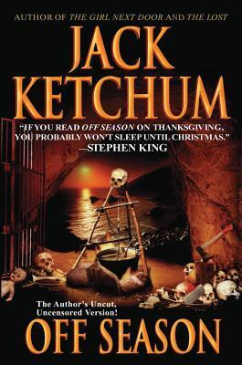

<div class="book">
  
  
  <div class="book-text">
    <h1>Off Season - Jack Ketchum</h1>
    <h2>"Always liked my sins pure and take it as it comes."</h2>
    <p>
      This book was my reintroduction to reading after a busy semester. Although it wasn’t particularly brutal in content, 
      I found that my hiatus resensitized me to, not just the gore, but the general depravity of the horror genre. 
      The book follows a group of friends targeted by a family of cannibals during their stay at an isolated cabin. 
      I personally don’t think that the main cast was very likable, so I unfortunately didn’t read this book under any 
      pressure for their safety. Ketchum’s other work evoked the strongest emotions I’ve ever had while reading, 
      so I may have had some unfair expectations, but this book didn’t make me feel much other than discomfort.
    </p>
  </div>
</div>
